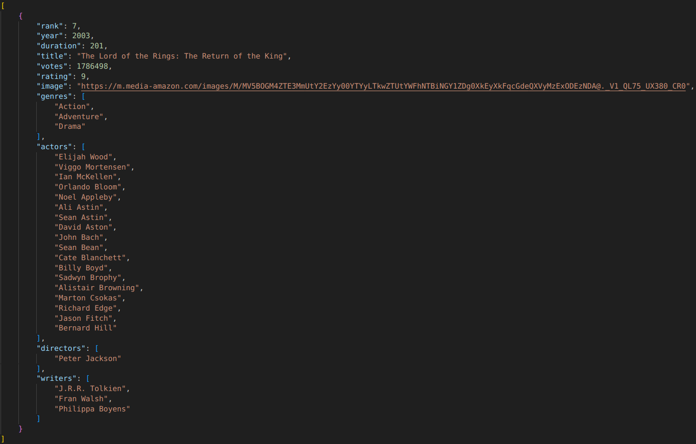

Data Visualisation of Top IMDB Movies in 2023
The goal of this project is to visualise data, find patterns, anomalies or correlation between the different data fields found in the dataset of top rated movies on IMDB from the year 2023. This site uses a few different type of visualisations such as image grids, histograms, scatter plots and bar plots. All of which can be found in the sidebar to the left. In the image below you can see an example of the data found in the dataset after it has been cleaned and reformatted. The full code of the project and all resources used can be found in this GitHub repository.
A sample clean data instance of the imdb-top-250-movies dataset